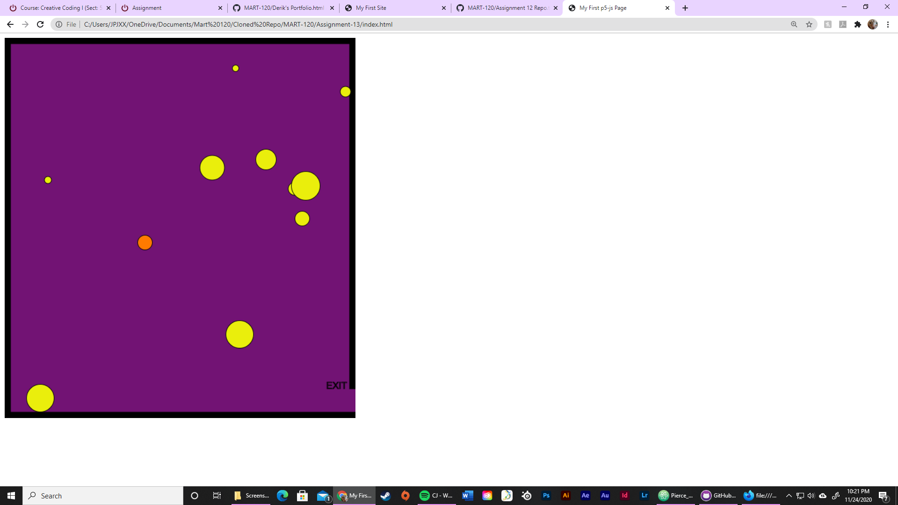

Project 1: We were asked to create either a game or a story using scratch which was our first introduction into coding.
Project 1: I created a story of a cat showing off that it can fly to a dragon.
Project 2: For this project we needed to create a game. I chose to make a ninja avaoidance game.
Project 2: For this project we created a mobile app. I went with a simple trivia app to see if you are a culinary genious.
Project 3: for project 3 we looked at alice and were tasked with creating a game or story. I went with a story of panda and his pet fox that attacked the monkey king.
Project 4: For this project alot of focus was spent on learning the basics of HTML, CSS, and JavaScript in order to build a website.
Project 4: Over the span of three weeks I was aqcuired the ablitity to be able to create three webpages while learning HTML basics.
Project 5: week 5 we shifted our focus towards javascript and after an introduction to p5.js I was able to create a "self portrait" using HTML and JavaScript.
Project 6: Utilizing the "self portrait" from our last project, this project focused on basic animationin which i added movement to multiple shapes and then confined them to the perimeter of the canvs.
Project 7: We took what we worked on the previous week and applied it to create a spore game consisting of different shapes and having them move at random speeds while our "hero" navigated around them.

Project 7: During the last portion of this project we added arrays which helped organize my workflow. we needed to do what we did in the previous weeks but by utilizing arrays to group things together.